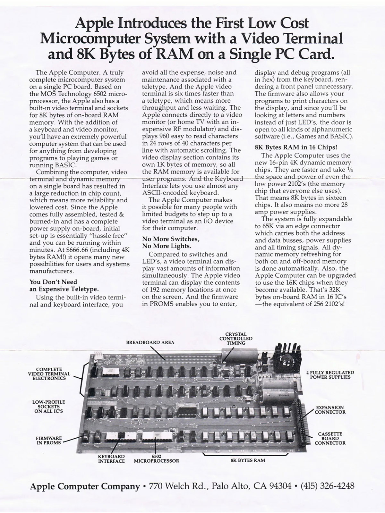

Fibonacci in 6502 Assembly
Have to dig to find gold. The benefits of speaking Parseltongue. Doing much with little. Understand your tools intimately. Assembly? What, like it’s hard?
Introduction
Low-level programming is good for the programmer’s soul.
– John Carmack
It’s a long way to the
topbottom if you wanna rock ’n’ roll.
– AC/DC
The assembly virus has infected me as a consequence of a year of web development weakening my immune system. I have succumbed1.
This post is a little foray into how subroutines work in 6502 assembly. Example of choice is a function that calculates the nth Fibonacci number. Hope you enjoy reading it as much as I did writing it.

What is 6502?
The MOS Technology 6502 (typically pronounced “sixty-five-oh-two”) is an 8-bit microprocessor. [1]
The 6502 is cool for many reasons. It’s especially attractive to those, like myself, who want to get close to bare metal without having to deal with complex modern architectures like x86/64 or ARM64. The other huge benefit is that there is a large collection of wonderful resources to help you along this journey, among them:
- Easy 6502 - a tutorial webpage with a built-in JavaScript emulator for 6502. It’s what got me started with 6502;
- Ben Eater’s fantastic YouTube series (particularly cool is the WozMon video);
- Visual 6502 - a transistor-level simulator of the 6502.
Fibonacci
To calculate the nth Fibonacci number, I started with some high-level code.
int fib(int n) {
int fprev = 0;
int fcurr = 1;
for (int i = 3; i <= n; i++) {
fcurr = fcurr + fprev;
fprev = fcurr - fprev;
}
return fcurr;
}
Let’s ignore the edge cases first (like the fact that fib(1) incorrectly
returns 1 instead of 0). Recall that the Fibonacci sequence is defined by the
recurrence $F_n = F_{n-1} + F_{n-2}$. This means that, at any point, all we need
to remember are two values: the previous and the current Fibonacci numbers at
the current point in the sequence. Using those, we compute the next one via the
recurrence above. Then, the next one is $F_{n+1} = F_n + F_{n-1}$. And so on.
That’s exactly what the body of the for-loop does. The line
fcurr = fcurr + fprev is exactly the update rule as specified by the
recurrence. The new ‘previous’ Fibonacci number then takes on the value of the
old ‘current’ Fibonacci number ($\color{blue}{F_{n-1}}$ is fprev in $F_{n+1}
= F_n + \color{blue}{F_{n-1}}$, but fcurr in $F_n = \color{blue}{F_{n-1}} +
F_{n-2}$,). To achieve this, we can’t just write fprev = fcurr, since fcurr
has changed its value: fcurr is now
fcurr_original + fprev. Therefore, we must set fprev = fcurr - fprev == fcurr_original + fprev - fprev == fcurr_original. (fcurr_original is not an
actual variable in the code, but a label to refer to the value of fcurr at the
start of the current loop iteration.)
Our Setup
The 6502 is notoriously difficult to write a compiler for because it has only three general-purpose registers and it doesn’t have a stack-relative addressing mode, meaning there’s not really an efficient way to implement local variables.
– NobodyNada, Hacker News [2]:
Before we begin translating the C code to 6502 assembly, we need to get some
fundamental things in order. First, we need to determine how we’re going to
supply the parameter n to the subroutine. In high-level programming, this is
something we take for granted (because the compiler handles it for us). As we
descend to the lower levels, in this case assembly, we need to specify this
ourselves; it is not handled automatically for us. Architectures tend to have
so-called calling conventions. These describe how the system should behave on
subroutine calls as it pertains to the entire flow of events: argument supply,
stack management, return addresses, etc. They help in particular compiler
writers, who need to know how the machine will handle their subroutine call so
that it does the right thing.
The cool thing about writing assembly code is that you can decide how to handle
a subroutine call whichever way you see fit. There are no restrictions beyond
the behavior of the instructions. In our case, we have a very simple function
signature: int fib(int n). This lends itself to a straightforward approach:
store the argument and (later) the result in the A register—the accumulator.
This also matches the calling
convention the smart folks
behind llvm-mos came up with.2
Secondly, we need to also think about where we’re going to store our local variables. Unfortunately, there aren’t enough registers in 6502 to store3 in them all the variables we need. For that reason, we’re going to essentially replicate the classic idea of storing our local variables in the stack. We have three local variables:
i- the loop indexfprev- the “previous” Fibonacci number, $F_{i - 2}$ at the beginning of any loop iterationfcurr- the “current” Fibonacci number, $F_{i - 1}$ at the beginning of any loop iteration
We’re of course not obligated to store all our local variables in the stack.
In fact, the Y register is a so-called index register and is therefore
commonly used to store counters and offsets4, making it the natural habitat
for the loop index i. (Why Y instead of X will become clear later.) The
remaining variables fprev and fcurr will be stored in the stack, in that
order.
Lastly, there’s a subtle piece we need to complete the puzzle. Recall that we
said the function parameter n is supplied to the subroutine in the register
A. However, since 6502 only offers arithmetic operations for the A register,
we’ll need to use it for our calculations, hence we cannot store n in it
over the course of the execution of the subroutine. We must therefore store it
in memory, on the stack, just like the local variables fprev and fcurr.
The 6502 Stack
There are a few important details worth knowing about the 6502 stack [3][4]:
- it is 256 bytes large, with address range
$0100-$01ff; - there is an 8-bit stack pointer register
SPfor the lower byte of the address (the higher byte is always$01); - there is no base pointer;
- there are only 2 read/write operations5:
PHA(push acc to stack) andPLA(pop stack to acc); - there is no stack-relative addressing;
- there are no instructions for manipulating the stack pointer
SPdirectly.
Moreover, the instructions JSR and RTS “affect the stack as the return address
is pushed onto or pulled from the stack, respectively.” [3]. In fact, pushing
the return address is the first thing that is done on a subroutine call,
therefore the return address is going to be at the top of the stack frame after
the call. RTS then pops this address from the stack and loads it into the
PC. Crucially, for RTS to work correctly, the stack must only contain
the return address when RTS is called (read: the stack pointer
must point right below the location where the return address is stored). This
is necessary because, as mentioned, there is no base pointer. The only
information the chip has about the stack is the stack pointer.
This constraint forces us to make one last decision. Since we established the
convention that the result will be stored in the accumulator A on return,
and the only way to pop elements from the stack is via PLA, which overwrites
the accumulator, we cannot simply execute PLA consecutively to pop all our
variables. One option is to reserve the stack byte right below the
return address for the return value. Since this byte is the last to be popped
to the accumulator via PLA, it will load the return value correctly. Another
option is to handle the stack popping manually, which is the option we take.
Recall that the only piece of information the 6502 chip has about the stack
is the stack pointer. This means, the chip doesn’t keep track of the number
of pushes and pops to know what is happening to the stack; it only looks
at SP. This means that, if we could find a way to adjust
it manually, we wouldn’t have to pop things into the accumulator
at all to remove things from the stack. In fact, that’s what the PLA
instruction does behind the scenes anyway! It loads the value at the top of the
stack into A and then increments SP. Luckily for us, there is an instruction
that allows us to modify SP, namely TXS (Transfer
X to SP). (This is why we used Y for the loop index instead of
X: there is no analogous instruction TYS.)
We are finally ready to visualize the stack. Let’s summarize the key points before we do so:
- we store
n,fprev, andfcurron the stack; - we store
i, the loop index, in registerY; - there is no base pointer register, base in the stack diagram is for our reference only.
Here is the stack after fprev and fcurr have been initialized.
+----------------+
| Stack |
+----------------+
| return address | <- base (e.g. $01FF) <- SP+5
| n | <- base - $2 (e.g. $01FD) <- SP+3
| fprev | <- base - $3 (e.g. $01FC) <- SP+2
| fcurr | <- base - $4 (e.g. $01FB) <- SP+1
| ----- | <- base - $5 (e.g. $01FA) <- SP
+----------------+
Right away, we can define useful offsets for our stack variables. Since SP
always points to the address below the last element, we have an offset of:
- +1 for
fcurr; - +2 for
fprev; - +3 for
n; - +5 for the return address (since it’s 2 bytes long).
However, since the stack pointer only stores the lower byte of the stack
address, we must store the higher byte $01 together with the offset, such that
SP + offset yields the correct address. Therefore, the offsets become:
define fcurr_offset $0101
define fprev_offset $0102
define N_offset $0103
define retaddr_offs $0105
The Assembly Code
We can now begin writing the assembly program. First, let’s handle the
initialization of fprev and fcurr.
fib:
PHA ; push n to stack
LDA #0 ; fprev = 0
PHA ; push fprev to stack
LDA #1 ; fcurr = 1
PHA ; push fcurr to stack
TSX ; store stack ptr SP in X
LDY #2 ; load initial loop index i = 2 in Y
You might’ve noticed that we set the initial loop index to 2 instead of 3 as in
the C code. We’re going to implement the equivalent for-loop for(int i = 2; i < n; i++), because it’s easier to quit a loop on i==n in 6502 than on i > n.
Note that we’ve also stored SP in X (after setting up the stack completely).
This is needed because there is no stack-relative addressing in 6502, which
means we can’t access, say, SP + offset with an instruction like
LDA offset, SP. However, there is X-relative addressing, so we can
write LDA offset, X and the value at X + offset will be loaded in A.
We can now continue with the loop body.
loop:
; i == n?
TYA ; transfer Y to A for comparison
CMP N_offset, X ; if i == n?
BEQ done ; then done
; else, continue with loop
; fcurr = fprev + fcurr
LDA fcurr_offset, X ; A = fcurr
ADC fprev_offset, X ; A = A + fprev == fcurr + fprev
STA fcurr_offset, X ; fcurr = fcurr + prev
; fprev = fcurr - fprev
SEC ; set carry for subtraction
LDA fcurr_offset, X ; A = fcurr
SBC fprev_offset, X ; A = A - fprev == fcurr - fprev
STA fprev_offset, X ; fprev = fcurr - fprev
INY ; increment i (i++)
JMP loop ; go to loop start
Finally, we can write the last block done (which corresponds to return fcurr). It is here we gain an appreciation for higher-level languages.
Recall that we need to modify SP such that it points right below the return
address, in order for RTS to jump to the return address. That address is
exactly the address where n is stored, i.e. SP + 3. We can’t modify SP
directly, and we can’t transfer it to any other register other than X. We
also can’t do arithmetic with X, only with A. So, our data must flow as
follows:
TSX TXA ADC #3 TAX TXS
SP -----> X -----> A --------> A = A + 3 -----> X -----> SP
With that taken care of, we only need to store the result in A before we
return. Since X has changed in the sequence (being now equal to SP_old + 3),
we can’t simply write LDA fcurr_offset, X, since that would load the value at
SP_old + $3 + $0101 = SP_old + $0104, i.e. the second byte of the return
address. We need to somehow execute LDA fcurr_offset, X - #$03. One way to
achieve this is to simply decrease X by 3 again, which can be done as
follows:
SBC #3 TAX
A --------> A - 3 -----> X
(Technically, we must set the carry bit before the subtraction, but that is a technical detail of the 6502 ISA that I will not go into.)
We do not need to first transfer X to A because the previous sequence
causes A and X to be equal.
Lastly, we can write LDA fcurr_offset, X to load the result in A and
RTS to return. All in all, the block looks like:
done:
TXA ; X -> A
CLC ; clear the carry bit
ADC #03 ; A = A + 3
TAX ; A -> X
TXS ; X -> SP
SEC ; set the carry bit
SBC $03 ; A = A - 3
TAX ; A -> X
LDA fcurr_offset, X ; A = fcurr
RTS ; return
Piecing the different blocks together, we get:
define fcurr_offset $0101
define fprev_offset $0102
define N_offset $0103
define retaddr_offs $0105
fib:
PHA ; push n to stack
LDA #0 ; fprev = 0
PHA ; push fprev to stack
LDA #1 ; fcurr = 1
PHA ; push fcurr to stack
TSX ; store stack ptr SP in X
LDY #2 ; load init loop index i = 2 in Y
loop:
; i == n?
TYA ; transfer Y to A for comparison
CMP N_offset, X ; if i == n?
BEQ done ; then done
; else, continue with loop
; fcurr = fprev + fcurr
LDA fcurr_offset, X ; A = fcurr
ADC fprev_offset, X ; A = A + fprev == fcurr + fprev
STA fcurr_offset, X ; fcurr = fcurr + prev
; fprev = fcurr - fprev
SEC ; set carry for subtraction
LDA fcurr_offset, X ; A = fcurr
SBC fprev_offset, X ; A = A - fprev == fcurr - fprev
STA fprev_offset, X ; fprev = fcurr - fprev
INY ; increment i (i++)
JMP loop ; go to loop start
done:
TXA ; X -> A
CLC ; clear the carry bit
ADC #03 ; A = A + 3
TAX ; A -> X
TXS ; X -> SP
SEC ; set the carry bit
SBC $03 ; A = A - 3
TAX ; A -> X
LDA fcurr_offset, X ; A = fcurr
RTS ; return
References
[1] Wikipedia contributors. (2024, July 19). MOS Technology 6502. In Wikipedia, The Free Encyclopedia. Retrieved 20:53, July 23, 2024, from https://en.wikipedia.org/w/index.php?title=MOS_Technology_6502&oldid=1235478584
[2] https://news.ycombinator.com/item?id=27327636
[3] https://www.masswerk.at/6502/6502_instruction_set.html
[4] http://www.6502.org/tutorials/6502opcodes.html
-
It turns out that I’d have likely been way more interested in my CompArch classes if they hadn’t used the Orkish x86/64. Sad! ↩︎
-
Caveat:
llvm-mostreatsints as 16-bit, whereas we set them to be 8 bits long. This explains why the table in thellvm-moswiki uses both theAandXregisters for the function argumentint a. ↩︎ -
Technically, we can store the three local variables in the three 6502 registers
A,XandY, but we can’t also operate on them at the same time, since 6502 only offers arithmetic operations for theAregister. ↩︎ -
Having such a special-purpose register is possible because a counter is a universal programming concept and behaves in a uniform way. For example: counters are typically incremented or decremented. An ISA can then offer special instructions that execute those operations, like 6502 does with
INY(INcrement Y) andDEY(DEcrement Y). ↩︎ -
Technically, there are also read/write operations for the status register. ↩︎